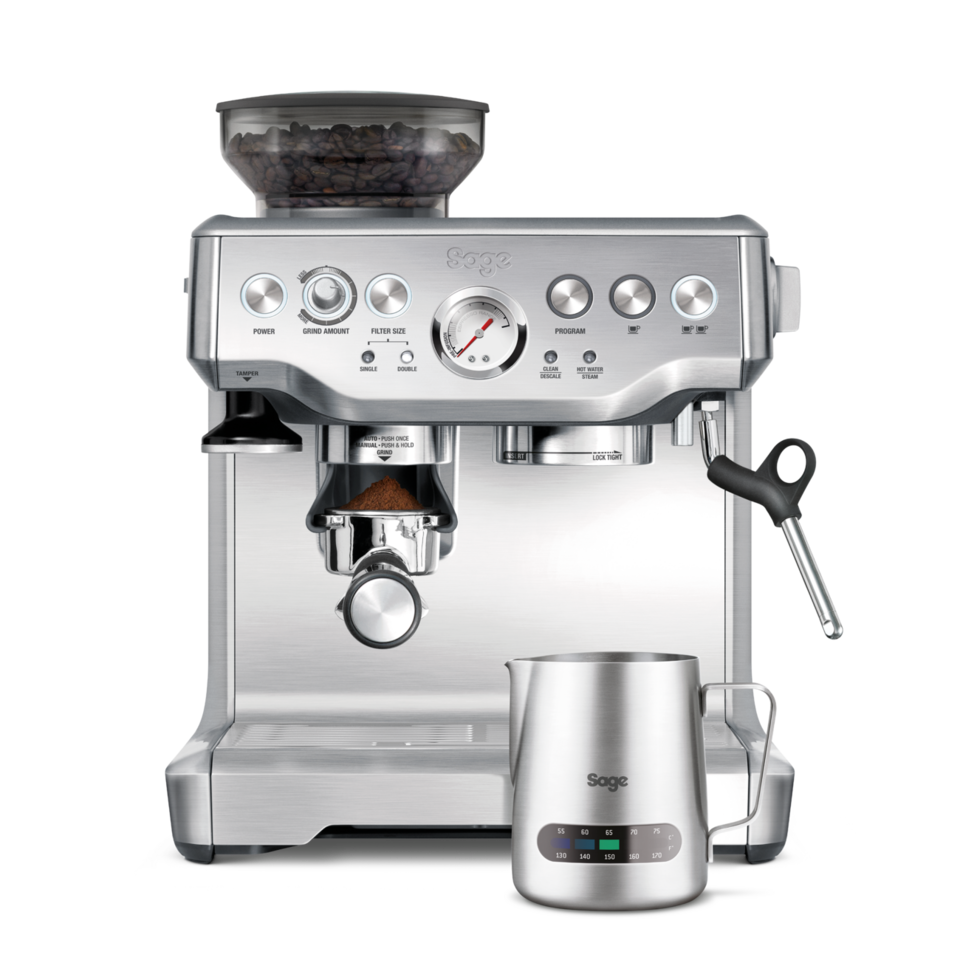

02 · Product KnowledgeMachine Components & Terminology
Every part name and proprietary term an agent needs to sound credible on a call - what it is, what it does, and the symptom it shows up in when it fails.
Machine at a Glance - Labeled Diagram
The Barista Express™ (SES875) shown below, since it has every part a Barista-line agent needs to recognise in one shot. Exact positions/features vary by model - check Model Specifications for the details. Hover a pin, or match the number to the legend below.

1 2 3 4 5 6 7 8 9 10 11 12 13Official product photo, Sage Appliances (sageappliances.com) - Barista Express™ SES875. Used for internal training reference.
Core Parts (all machines)
Every Sage espresso machine, regardless of model, is built around: water pump, heating element, solenoid valve, hoses, and circuit boards.
Front Panel / Controls (Barista-line)
HopperGrinderGrind size dial PowerGrind amountFilter size (single/double) TamperPortafilterPressure gauge ProgrammeCup size buttonsSteam/hot dial Hot water outletGroup headSteam wand
Accessories
PortafilterMilk jug1-cup single wall basket 2-cup single wall basketSteam tip cleaning toolCleaning disc BrushRazor™ bladeWater filter + holder 1-cup dual wall basket2-cup dual wall basketGrinder cleaner Machine descalerGroup head cleanerSteam wand cleaner
Tamper ("group handle")
Packs ground coffee evenly into the portafilter basket for a quality extraction. Comes in two sizes: 58mm and 54mm - always match the tamper size to the portafilter size (see model comparison table).
Filter Baskets
Single Wall
Traditional basket, more room for coffee. Needs a precise grind size, dose, and tamp to extract well.
Dual Wall / Pressurized
An internal screen forces coffee through one tiny hole under machine pressure - 58mm/54mm sizes. Best for customers with no grinder, or using pre-ground/non-fresh beans.
Pressure Gauge
Measures the resistance of water passing through the coffee puck. Brewing pressure should read 9 bar. A gauge that won't reach 9 bar usually means incorrect dose, expired beans, or grind too coarse - see Troubleshooting.
Three-Way Solenoid Valve
Every machine has one except the Bambino (SES500) and the Duo Temp Pro (SES810). It acts as a pressure-release valve and vacuum pump - this is what powers the "dry puck" feature, sucking excess moisture out of the puck right after extraction and releasing it through the purge spout underneath the machine.
Shower Screen / Inner Shower Screen
Found on the Barista line, Bambino, and Dual Boiler. Diffuses water from the group head so it spreads evenly across the coffee bed - this is the part most responsible for consistent shot-to-shot strength.
Group Head Seal / Brew Head Seal
A silicone ring that seals the portafilter against the brew head, stopping leaks and holding correct pressure through the puck.
Feature Legend - Proprietary Terms
| Term | What it means |
|---|---|
| ThermoCoil / ThermoJet | Sage's proprietary rapid water-heating systems. ThermoJet reaches extraction temperature in ~3 seconds - faster than the older ThermoCoil design. |
| PID temperature control | Electronic closed-loop control that holds brew temperature stable. Present on Impress, Pro, Touch, and higher-tier models. |
| Dual boiler | Separate boilers for brewing and steaming, so both can run at the same time. Found on the Dual Boiler, Oracle, and Oracle Touch; implied (not explicitly named) on the Oracle Jet. |
| The Impress™ Puck System | SES876 and SES882 only. Automated dose-loading, assisted tamping, and self-correcting dose measurement. |
| Auto MilQ™ | SES985 (Oracle Jet) only. Fully automatic milk texturing system supporting multiple milk types. |
| The Razor™ | Dose-trimming tool included with every model that has a grinder workflow - used to level the coffee puck to the correct dose. |
| Water filter reminder cycle | Ranges from 60 days (SES500 at high water hardness) to 3 months (most models) to 2 months (SES920 Dual Boiler). |
Source: SageKB.md §9 (merged from Sage.md).